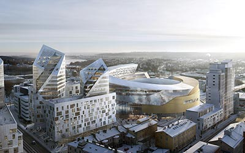

Raitiotie

Tampereelle rakennetaan kaksihaarainen raitiotie Pyynikintorilta Hervantaan ja Taysin alueelle vuosien 2017 - 2021 aikana.
Tampereen raitiotie tai kaupunkiraitiotie on rakennusvaiheessa oleva kevyt raideliikennejärjestelmä Tampereen kaupunkiseudulle. Ensimmäisen vaiheen kahdella linjalla Hervanta–Kaleva–Pyynikintori ja Pyynikintori–TAYS rakennustyöt ovat käynnissä ja liikennöinti alkaa 2021. Lopullinen päätös raitiotien ensi vaiheen rakentamisesta tehtiin kaupunginvaltuuston kokouksessa 7. marraskuuta 2016.
Toinen osuus, joka kulkee Pyynikintorilta Lentävänniemeen, aloitetaan tämänhetkisten suunnitelmien mukaan alkuvuodesta 2021 ja se valmistuu vuonna 2024.
Lähde: Wikipedia
Sivun alkuun
Tampereen Kansi ja Areena

Tampereen ydinkeskustaan, junaradan päälle rakennetaan ainutlaatuinen Kansi, johon monitoimiareenan lisäksi rakennetaan toimisto- ja liiketiloja, asuntoja, hotelli ja toritiloja.
Monitoimiareenan kokonaislaajuus on lähes 50.000 m2 sisältäen yli 10.000 katsomopaikkaa. Kaupunginosat yhdistävästä Kannesta luodaan vuorokauden ympäri elävä ja innostava ympäristö, johon sijoittuu myös liike- ja toimistotiloja sekä asuntoja ja hotelli, yhteensä runsaat 60.000 m2. Hankkeen kokonaislaajuus on 110.000 m2 ja yli 500 miljoonaa euroa.
Liikenne tukeutuu julkiseen liikenteeseen eli raideliikenteeseen ja linja-autoihin.
Sijainti on keskeinen ja 3,7 miljoonaa suomalaista asuu kahden tunnin etäisyydellä Kannen tapahtumista.
Lähde: Kaupungin nettisivut
Sivun alkuun